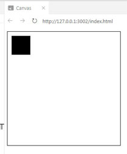
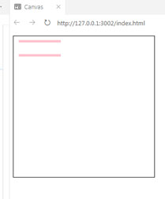
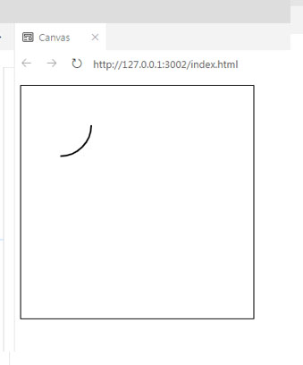

The presentation: Canvas
Created by Tatsiana Pshyhotskaya
1. What is CANVAS?
CANVAS - an HTML5 element designed to create a two-dimensional image using JS-script.
or (in other words)
CANVAS is something of the blank canvas or sheet of the paper.
2. How can we use a CANVAS?
2.1. Drawing a rectangle
2.1. Drawing a rectangle
.fillRect(10, 10, 50, 50)
- x-coordinate
- y-coordinate
- width of rectangle
- height of rectangle
2.1. Drawing a rectangle
Result: small black square
2.1. Drawing a rectangle
Change color of rectangle:
.fillStyle = "Blue"
2.1. Drawing a rectangle
Result: small blue square
2. How can we use a CANVAS?
2.2. Drawing rectangle outlines
2.2. Drawing rectangle outlines
Result: a rectangle outline
2. How can we use a CANVAS?
2.3. Drawing lines or paths
Lines on the canvas are called paths.
To draw a path with the canvas, we use x- and y-coordinates which we set for the start point and the end point of each line.
2. How can we use a CANVAS?
2.3. Drawing lines or paths
2.3. Drawing lines or paths
Result: two rectangle lines
2.3. Drawing lines or paths
2.3. Drawing lines or paths
Result: we drew a flag (a closed path)
2. How can we use a CANVAS?
2.4. Drawing Arcs and Circles
Besides of lines, paths, rectangles, we can draw circle, arcs and quarter of the circle.
2. How can we use a CANVAS?
2.4. Drawing Arcs and Circles
2.4.1. Drawing a full Circle
.arc(50, 50, 40, 0, Math.PI * 2, false)
- x-coordinate of circle center
- y-coordinate of circle center
- radius of the circle
- starting angle (in radian)
- ending angle (in radian)
- direction (in clockwise and counterclockwise direction)
2. How can we use a CANVAS?
2.4. Drawing Arcs and Circles
2.4.1. Drawing a full Circle
Result: a full circle
2. How can we use a CANVAS?
2.4. Drawing Arcs and Circles
2.4.2. Drawing an arc of the Circle
2. How can we use a CANVAS?
2.4. Drawing Arcs and Circles
2.4.2. Drawing an arc of the Circle
Result: an arc of the circle

2. How can we use a CANVAS?
2.4. Drawing Arcs and Circles
2.4.3. Drawing a quarter of the circle
2. How can we use a CANVAS?
2.4. Drawing Arcs and Circles
2.4.3. Drawing a quarter of the circle
Result: a quarter of the circle
2. How can we use a CANVAS?
2.5. Creating animation
Creating canvas animations in JavaScript is like creating a stop-motion animation.
Animation process:
- draw a shape
- update position or size of the shape
- clear the canvas
- draw a shape again
2. How can we use a CANVAS?
2.5. Creating animation
2. How can we use a CANVAS?
2.5. Creating animation
Result: a moving circle